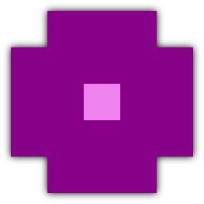

Backtrack
BacktrackA fully featured tower defense game built with <canvas>.
Instructions
Build and upgrade turrets (which costs money and increases score) to kill creeps (which generates money and increases score). Experiment with the turrets; each has a special ability when fully upgraded.
Shortcuts
- 1
- Build Laser / Upgrade damage
- 2
- Build Missile / Upgrade rate
- 3
- Build Tazer / Upgrade range
- 4
- Build Mortar / Move
- *
- Sell
- =
- Fast forward
- Esc
- Deselect / Cancel / Pause
- Enter
- Send wave
Canvas TD was originally created for 10k Apart 2010, a challenge to build a web app in 10 KiB or less. Finished in less than twelve days, it failed to receive any prizes, but was ranked high in community voting and generated a significant amount of Twitter activity. While lacking much in the way of instructions, it was fully featured and quite enjoyable, and can still be played here.
After the contest ended, work was started on a rewrite. Completed in June 2011, it featured far better code, many UI improvements, new gameplay elements, and some real instructions. Technologies used include <canvas>, @font-face, the Twitter Search API, Web Storage, and many other HTML5/CSS3/ES5 features.
The endless, increasingly difficult gameplay (and many other core elements) is inspired by Onslaught TD. The retro look is heavily based on the excellent BIT.TRIP games and Vector TD. I'd also like to thank Alex K. and David S. for their plentiful ideas, testing, feedback, and motivation.
 ←